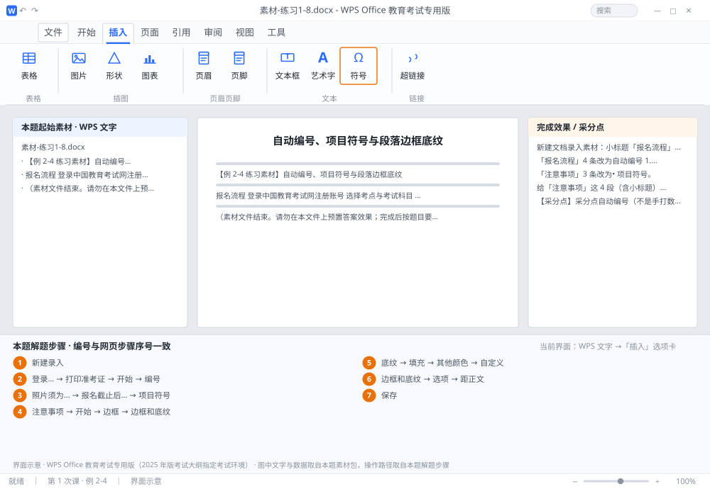

完成比对文档 · 例 2-4
自动编号、项目符号与段落边框底纹 ｜ 第 1 次课 / WPS 文字 ｜ 网页：入门实操课.html ｜ 考试环境：WPS Office 教育考试专用版（2025 年版考试大纲指定考试环境）
用途 本页按修订后的题目要求与解题步骤生成，是交卷自查的结果基准：
逐项列出每一步应出现的可复核结果，配合模拟操作截图与解题结果文件使用。
它不是素材包的一部分，不会预置答案动作；起始素材仍从本题素材包下载。
一、本题起始素材包
目录：练习素材/练习1-8-编号与边框底纹/ ｜
下载包：练习素材/下载/练习1-8-编号与边框底纹.zip
二、题目要求
- 新建文档录入素材：小标题「报名流程」+ 4 条步骤，小标题「注意事项」+ 3 条说明。
- 「报名流程」4 条改为自动编号 1. 2. 3. 4.（不许手动打数字）。
- 「注意事项」3 条改为• 项目符号。
- 给「注意事项」这 4 段（含小标题）加 1.5 磅实线方框 + 浅黄色底纹 RGB(255,255,204)，距正文左右各 0.2 厘米。
- 保存为 学号-姓名-练习2-4.docx。
三、解题步骤（编号与下方核对表、截图编号一致）
- 新建录入。每行一段，共 9 段。编号、符号先不输入，交给 WPS 自动生成。
- 套用自动编号。选中「登录…」到「打印准考证」4 段 →「开始」→「编号」下拉 → 选 1. 2. 3. 样式。段落前出现 1~4，删除其中一条后其余会自动重排。
- 套用项目符号。选中「照片须为…」到「报名截止后…」3 段 →「项目符号」下拉 → 选 •（圆点）。
- 加段落边框。选中「注意事项」及其下 3 段 →「开始」→「边框」下拉 →「边框和底纹」→「边框」选项卡：设置选 方框、线型 实线、宽度 1.5 磅、「应用于」选 段落。
- 加段落底纹。切到「底纹」选项卡 →「填充」选「其他颜色」→「自定义」→ 输入 R=255、G=255、B=204 → 确定；「应用于」选 段落 → 确定。
- 调内边距。在「边框和底纹」对话框点「选项」→「距正文」左/右均设 0.2 厘米 → 确定。
- 保存。F12 另存为 学号-姓名-练习2-4.docx，检查方框是否完整包住 4 段。
四、完成效果 / 采分点
采分点自动编号（不是手打数字） · 项目符号样式正确 · 边框宽度 1.5 磅且"应用于段落" · 底纹 RGB 值准确
五、逐项完成核对表
| 步骤 | 关键操作路径 | 应出现的结果（可复核） |
|---|
| 1 | 新建录入 | 新建录入 |
| 2 | 套用自动编号 | 「登录…」、「打印准考证」、「开始」、「编号」 |
| 3 | 套用项目符号 | 「照片须为…」、「报名截止后…」、「项目符号」 |
| 4 | 加段落边框 | 「注意事项」、「开始」、「边框」、「边框和底纹」、1.5 磅 |
| 5 | 加段落底纹 | 「底纹」、「填充」、「其他颜色」、「自定义」、「应用于」 |
| 6 | 调内边距 | 「边框和底纹」、「选项」、「距正文」、0.2 厘米 |
| 7 | 保存 | F12、学号-姓名-练习2-4.docx |
六、模拟操作截图

界面示意 · WPS Office 教育考试专用版 · 橙色编号与本题解题步骤序号一致；
图中文字与数据取自本题素材包，功能入口取自本题解题步骤。
核对方法：按网页解题步骤完成并另存自己的成稿后，逐行比对本表第 3 列的
参数、公式、区域、文件名与对象数量；再对照网页「完成效果 / 采分点」检查版式是否一致。